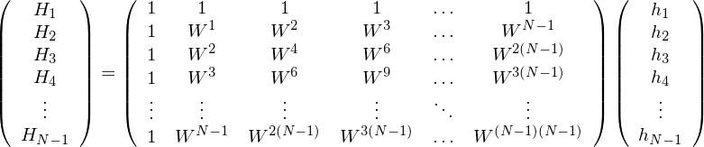

In order to solve the linear algebraic equations (59) for hj, multiply both sides of each equation by exp, where J is an integer between [0,N − 1], and then add all the equations together, which yields
|
| (74) |
Interchanging the sequence of the two summation on the right-hand side, equation (74) is written
 | (75) |
Using the fact that (verified by Wolfram Mathematica)
![N∑−1 [ 2π ]
exp iN--n(j − J) = N δjJ,
n=0](fourier_analysis79x.png) | (76) |
where δjJ is the Kroneker Delta, equation (75) is written
 | (77) |
i.e.,
 | (78) |
which can be solved to give
|
| (79) |
Equation (79) is the inverse DFT.